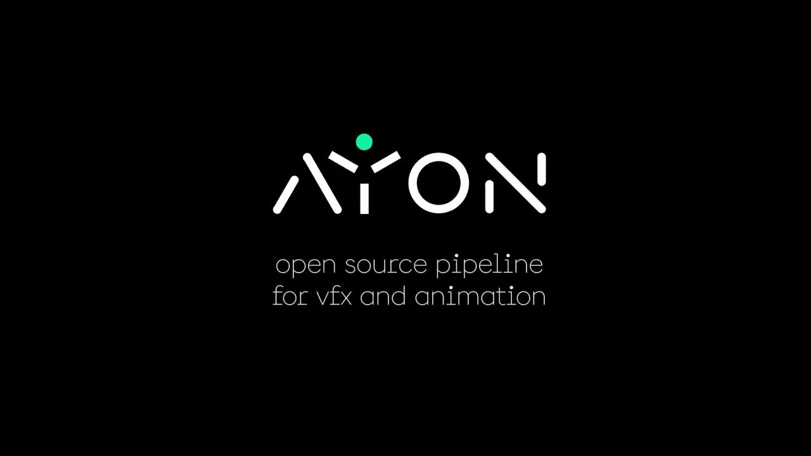

AYON：整合 DCC、版本追蹤與專案管理的開源 VFX／Animation Pipeline
AYON 前身為 OpenPype，是開源影視與動畫製作管理平台，可把 Blender、Maya、Houdini 等內容製作軟體，與版本追蹤、審核、任務和專案管理集中到同一套系統，也提供 USD、Unreal 與 API 擴充能力。

動畫 ★★★★☆
完整分析
技術／流程變更
AYON 解決的不是單一 DCC 功能，而是跨軟體的 context、publish、version 與 review 一致性；對沒有大型 TD 團隊的小型工作室，現成模板與集中式 dashboard 能降低自建 pipeline 的起始成本。
Production 影響
評估時應用一條真實 asset／shot 流程測試：建任務、開 DCC、publish、版本更新、review、退版，再觀察 artist 是否仍需手動搬檔或重複輸入 metadata，才能判斷整合價值。
導入測試與限制
AYON 本身可客製化，意味著導入成本會轉移到 connector、命名規則、權限與維護責任；若公司已有自研 tracking 或特殊資料結構，仍需先做整合 PoC，而不是假設安裝後即可取代既有 pipeline。
BRIEF｜來源已驗證；證據深度較有限，完整分析會明確區分已知資訊與待驗證事項。